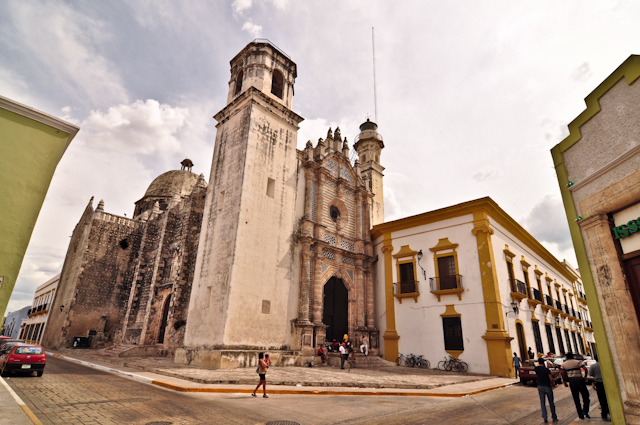
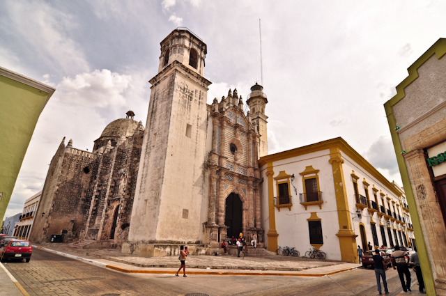

Ex Templo de San José. El lugar era ocupado antes de 1716 por una ermita dedicada al mismo santo, y custodiada por el gremio de calafates y carpinteros de la villa.
Hacia el año de 1716 se estableció el colegio jesuita en Campeche.
Los jesuitas hicieron de la ermita de calafates y carpinteros de San José, un templo único dentro el perfil colonial de Campeche,
propio de la arquitectura jesuita, con características constructivas diferentes a los demás templos existentes en la villa.
Sin embargo, su obra quedó inconclusa por la expulsión de su orden de territorios coloniales hacia 1767,
no es sino a principios del siglo XIX que este templo de San José quedó concluido.
Es de una sola nave con forma de cruz latina.
La portada se divide en 3 cuerpos. La bóveda es de aristas y descansa sobre un entablamento decorados con azulejos blancos y azules,
al cual a su vez descansa sobre esbeltas pilastras. Posee vidrio talabaresco. Su cúpula es de media naranja coronada con una linternilla.
La planta de la torre orientes es cuadrangular y en ella descansa el cuerpo del campanario que es de planta octagonal.
La torre poniente es mucho más pequeña y alberga el faro que fue instalado en 1865.
Fue utilizado para el culto religioso hasta 1914, después como bodega del Banco Rural y posteriormente se entregó al Instituto Campechano.
 
